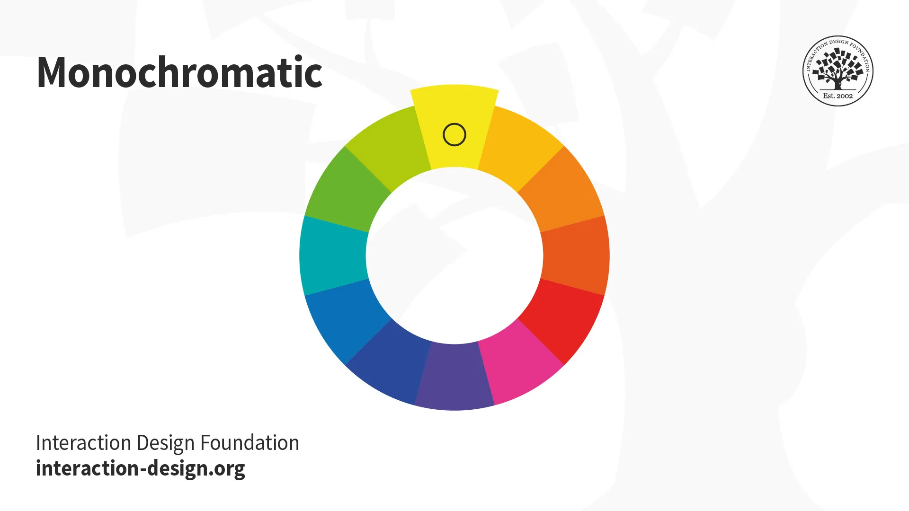
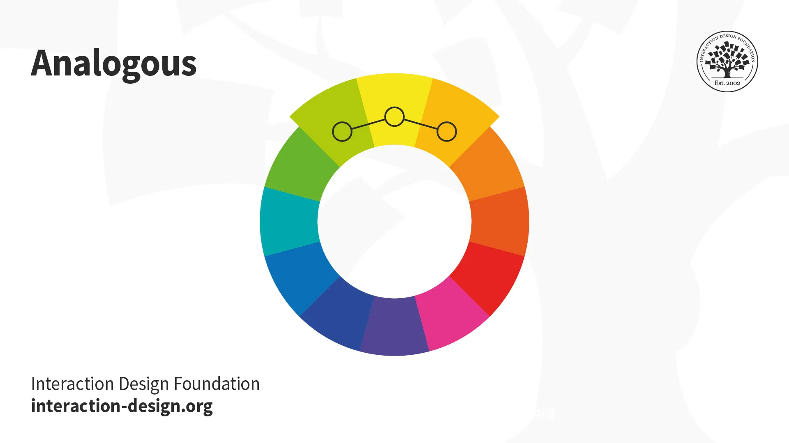
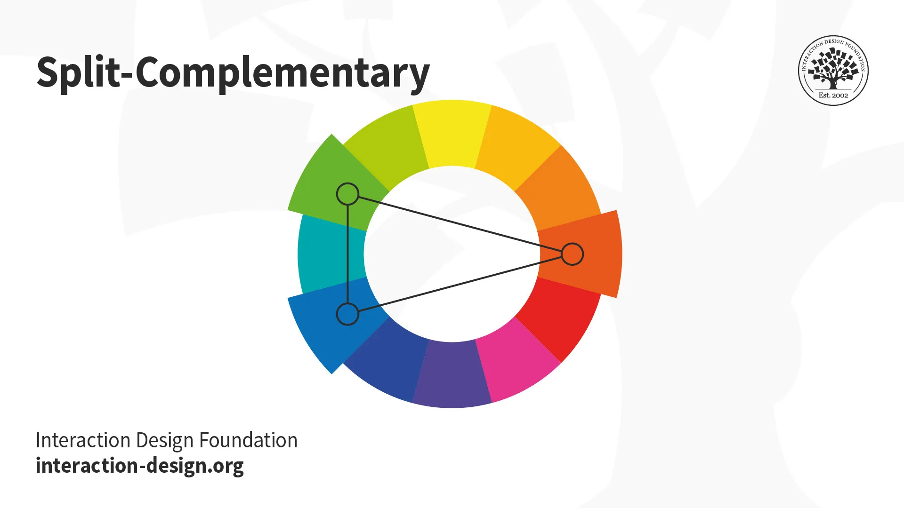
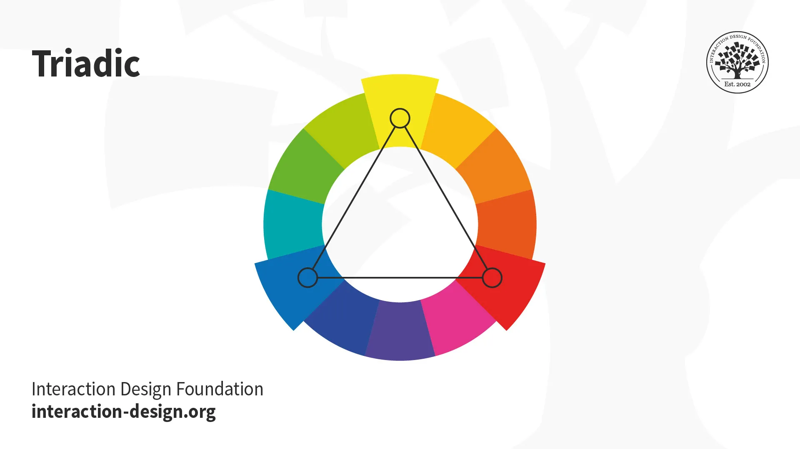
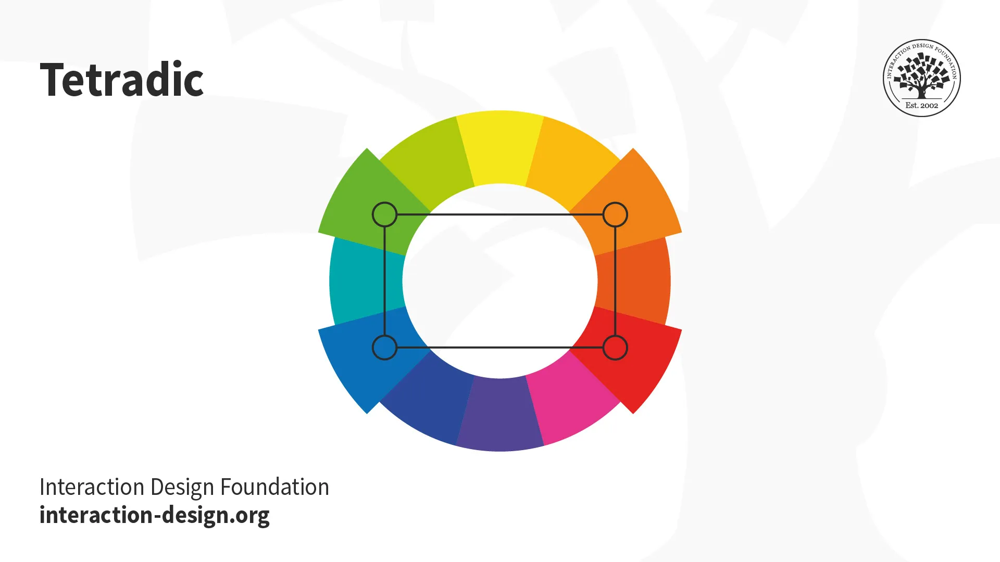

In screen design, designers use the additive color model, where red, green and blue are the primary
colors. Just as you need to place images and other elements in visual design strategically, your color
choices should optimize your users' experience in attractive interfaces with high usability. When
starting your design process, you can consider using any of these main color schemes...

Take one hue and create other elements from different shades and tints of it.

Use three colors located beside one another on the color wheel (e.g., orange, yellow-orange
and
yellow to show
sunlight). A variant is to mix white with these to form a “high-key” analogous color scheme
(e.g.,
flames).
Use “opposite color” pairs—e.g., blue/yellow—to maximize contrast.

Add colors from either side of your complementary color pair to soften the contrast.

Take three equally distant colors on the color wheel (i.e., 120° apart: e.g.,
red/blue/yellow).
These colors may
not be vibrant, but the scheme can be as it maintains harmony and high contrast. It's easier
to
make
visually
appealing designs with this scheme than with a complementary scheme.

Take four colors that are two sets of complementary pairs (e.g., orange/yellow/blue/violet)
and
choose one
dominant color. This allows rich, interesting designs. However, watch the
balance between warm and cool colors.
A variant of tetradic; you find four colors evenly spaced on the color wheel (i.e., 90°
apart).
Unlike tetradic,
square schemes can work well if you use all four colors evenly.
Your colors must reflect your design's goal and the brand's personality. You should also apply color
theory to optimize a positive psychological impact on users. So, you should carefully determine how the
color temperature (i.e., your use of warm, neutral and cool colors) reflects your message.